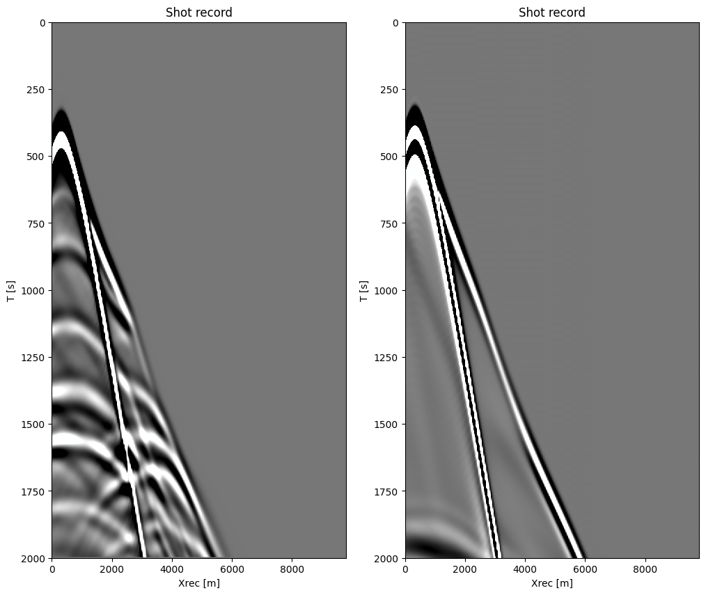
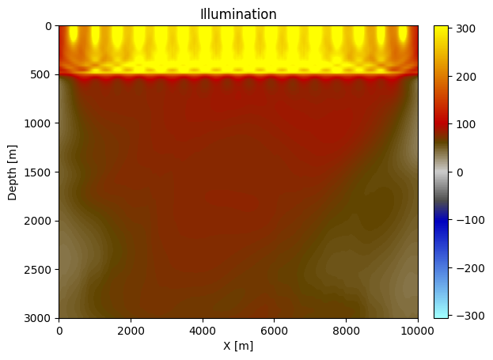

Seismic preconditionners
This tutorials provide an overview of the preconditionners available in JUDI. THese examples are useful, if not necessary, for FWI, RTM and LSRTM to improve convergence and the quality of the result. Preconditionners fall in two categories:
- Model preconditioners: these are linear operators that act on model domain vectors such as the velcoity or seismic image.
- Data preconditionners: there are linear operators that act on the data, i.e the shot records.
We will show in the following example for both those categories. By design, the JUDI precontionners are designed to work on JUDI types such as judiVector or PhysicalParameters but can also be used directly on standard nion dimensional vectors.
Setup
We setup this tutorial by creating a few objects we will be using. We consider
\[d_{\text{obs}}\]
a seismic dataset consiting ofnsrcsources\[m\]
a squared slowness model\[dm\]
a model perturbation. For simplicity we derive this image directly for the squared slowness to avoid costly computation
using JUDI, SlimPlotting, JLD2, HDF5, LinearAlgebra, SegyIO, Images
data_path = JUDI.JUDI_DATA"/Users/mathiaslouboutin/.julia/dev/JUDI/src/../data"Model
n, d, o, m0, m = read(h5open("$(data_path)/overthrust_model.h5","r"), "n", "d", "o", "m0", "m");figure(figsize=(10, 5))
plot_velocity(m'.^(-.5), d; aspect=1, new_fig=false, cbar=true)figure(figsize=(10, 5))
plot_velocity(m0'.^(-.5), d; aspect=1, new_fig=false, cbar=true)dm = m0 - m
figure(figsize=(10, 5))
plot_simage(dm', d; aspect=1, new_fig=false, cbar=true, name="dm")model = Model(n, d, o, m)
model0 = Model(n, d, o, m0)Model (n=(401, 121), d=(25.0f0, 25.0f0), o=(0.0f0, 0.0f0)) with parameters (:m, :rho)Data
Now that we have a model, let's load and look at the data
block = segy_read("$(data_path)/overthrust_shot_records.segy")
d_obs = judiVector(block); # linearized observed data
# Source
src_geometry = Geometry(block; key = "source")
wavelet = ricker_wavelet(src_geometry.t[1],src_geometry.dt[1],0.008f0) # 8 Hz wavelet
q = diff(judiVector(src_geometry, wavelet), dims=1)[33m[1m┌ [22m[39m[33m[1mWarning: [22m[39mFixed length trace flag set in stream: IOBuffer(data=UInt8[...], readable=true, writable=false, seekable=true, append=false, size=7076688, maxsize=Inf, ptr=3601, mark=-1)
[33m[1m└ [22m[39m[90m@ SegyIO ~/.julia/dev/SegyIO/src/read/read_file.jl:36[39m
judiVector{Float32, Matrix{Float32}} with 16 sourcesfigure(figsize=(10, 10))
plot_sdata(get_data(d_obs[1]); new_fig=false)since some of the preconditionners are designed for inversion, let's create the data forr the background model and the propagators needed for imaging and inversion
F = judiModeling(model, q.geometry, d_obs.geometry; options=Options(space_order=16))
J = judiJacobian(F(model0), q)
d0 = F(model0)*qBuilding forward operator
Operator `forward` ran in 0.11 s
Operator `forward` ran in 0.35 s
Operator `forward` ran in 0.35 s
Operator `forward` ran in 0.35 s
Operator `forward` ran in 0.35 s
Operator `forward` ran in 0.35 s
Operator `forward` ran in 0.35 s
Operator `forward` ran in 0.35 s
Operator `forward` ran in 0.35 s
Operator `forward` ran in 0.32 s
Operator `forward` ran in 0.35 s
Operator `forward` ran in 0.42 s
Operator `forward` ran in 0.35 s
Operator `forward` ran in 0.34 s
Operator `forward` ran in 0.35 s
Operator `forward` ran in 0.35 s
judiVector{Float32, Matrix{Float32}} with 16 sourcesfigure(figsize=(12, 10))
subplot(121)
plot_sdata(get_data(d_obs[1]); new_fig=false)
subplot(122)
plot_sdata(d0[1]; new_fig=false)
Model preconditionners
Dm = judiDepthScaling(model0)
Tm = judiTopmute(model0; taperwidth=0)
Il = inv(judiIllumination(model0))
mcases = [(Dm, "Depth scaling"), (Tm, "Water layer mute"), (Il, "Illumination")]3-element Vector{Tuple{JUDI.ModelPreconditioner{Float32, Float32}, String}}:
(DepthScaling{Float32, 2, 0.5f0}(48521, Float32[0.0 25.0 … 2975.0 3000.0]), "Depth scaling")
(TopMute{Float32, 2, 1}(48521, [21, 21, 21, 21, 21, 21, 21, 21, 21, 21 … 21, 21, 21, 21, 21, 21, 21, 21, 21, 21], 0), "Water layer mute")
(judiIllumination{Float32, :u, -1, true}("judiIllumination{Float32, :u, 1, true}", Dict{SubString{String}, PhysicalParameter{Float32, 2}}("u" => PhysicalParameter{Float32, 2} of size (401, 121) with origin (0.0f0, 0.0f0) and spacing (25.0f0, 25.0f0)), 48521), "Illumination")rtm = J'*(d0 - d_obs)Building forward operator
Operator `forward` ran in 0.17 s
Building adjoint born operator
Operator `gradient` ran in 0.15 s
Operator `forward` ran in 0.28 s
Operator `gradient` ran in 0.15 s
Operator `forward` ran in 0.33 s
Operator `gradient` ran in 0.14 s
Operator `forward` ran in 0.34 s
Operator `gradient` ran in 0.14 s
Operator `forward` ran in 0.27 s
Operator `gradient` ran in 0.15 s
Operator `forward` ran in 0.46 s
Operator `gradient` ran in 0.15 s
Operator `forward` ran in 0.35 s
Operator `gradient` ran in 0.15 s
Operator `forward` ran in 0.40 s
Operator `gradient` ran in 0.15 s
Operator `forward` ran in 0.33 s
Operator `gradient` ran in 0.15 s
Operator `forward` ran in 0.33 s
Operator `gradient` ran in 0.15 s
Operator `forward` ran in 0.34 s
Operator `gradient` ran in 0.15 s
Operator `forward` ran in 0.30 s
Operator `gradient` ran in 0.15 s
Operator `forward` ran in 0.24 s
Operator `gradient` ran in 0.18 s
Operator `forward` ran in 0.36 s
Operator `gradient` ran in 0.16 s
Operator `forward` ran in 0.34 s
Operator `gradient` ran in 0.17 s
Operator `forward` ran in 0.35 s
Operator `gradient` ran in 0.17 s
PhysicalParameter{Float32, 2} of size (401, 121) with origin (0.0f0, 0.0f0) and spacing (25.0f0, 25.0f0)plot_simage(Il.illums["u"]'; cbar=true, name="Illumination")
Model top mute
This preconditionner is one of the simplest one and mutes the water layer, or more generally sets to zeros the top of the model.
figure(figsize=(12, 12))
for (i, (pr, name)) in enumerate(mcases)
subplot(3,1,i)
plot_simage((pr*rtm)'; new_fig=false, name=name)
end
tight_layout()Data Preconditionners
Dt = judiTimeDerivative(d_obs, .5)
It = judiTimeIntegration(d_obs, .5)
Dmr = judiDataMute(q, d_obs; mode=:reflection, taperwidth=2)
Dmt = judiDataMute(q, d_obs; mode=:turning)
Df = judiFilter(d_obs, .1, 5.0)
dcases = [(Dt, "Fractional (.5) time derivative"),
(It, "Fractional (.5) time integration"),
(Dmr, "Turning waves muting"),
(Dmt, "Reflection muting"),
(Df, "bandpass filter [.1, 5]Hz")];figure(figsize=(12, 12))
for (i, (pr, name)) in enumerate(dcases)
subplot(3,2,i)
dloc = (pr*d_obs)[1]
plot_sdata(dloc; new_fig=false, name=name)
end
tight_layout()
Putting it together
Of course, in practice numerous preconditionners would be needed for the best result. Since our implementation relies on linear algebra abstractions, those preconditionners can be used with each other and in combination with propagators as well. We show a few examples below
# Low frequency gradient with turing waves only for FWI
rtmlow = Il*Tm*J'* Dmt * Df * (d0 - d_obs);Operator `forward` ran in 0.25 s
Operator `gradient` ran in 0.15 s
Operator `forward` ran in 0.32 s
Operator `gradient` ran in 0.14 s
Operator `forward` ran in 0.34 s
Operator `gradient` ran in 0.15 s
Operator `forward` ran in 0.26 s
Operator `gradient` ran in 0.14 s
Operator `forward` ran in 0.33 s
Operator `gradient` ran in 0.15 s
Operator `forward` ran in 0.34 s
Operator `gradient` ran in 0.15 s
Operator `forward` ran in 0.34 s
Operator `gradient` ran in 0.14 s
Operator `forward` ran in 0.33 s
Operator `gradient` ran in 0.15 s
Operator `forward` ran in 0.29 s
Operator `gradient` ran in 0.15 s
Operator `forward` ran in 0.27 s
Operator `gradient` ran in 0.16 s
Operator `forward` ran in 0.33 s
Operator `gradient` ran in 0.15 s
Operator `forward` ran in 0.34 s
Operator `gradient` ran in 0.16 s
Operator `forward` ran in 0.37 s
Operator `gradient` ran in 0.21 s
Operator `forward` ran in 0.27 s
Operator `gradient` ran in 0.14 s
Operator `forward` ran in 0.34 s
Operator `gradient` ran in 0.14 s
Operator `forward` ran in 0.24 s
Operator `gradient` ran in 0.15 s
[33m[1m┌ [22m[39m[33m[1mWarning: [22m[39mJOLI linear operator, returning julia Array
[33m[1m└ [22m[39m[90m@ JUDI ~/.julia/dev/JUDI/src/TimeModeling/Types/ModelStructure.jl:217[39mfigure(figsize=(12, 4))
plot_simage(reshape(rtmlow, model.n)', model.d; new_fig=false, name="Low frequency FWI gradient", cmap=seiscm(:bwr))[33m[1m┌ [22m[39m[33m[1mWarning: [22m[39mDeprecated model.n, use size(model)
[33m[1m│ [22m[39m caller = ip:0x0
[33m[1m└ [22m[39m[90m@ Core :-1[39m
[33m[1m┌ [22m[39m[33m[1mWarning: [22m[39mDeprecated model.d, use spacing(model)
[33m[1m│ [22m[39m caller = ip:0x0
[33m[1m└ [22m[39m[90m@ Core :-1[39m